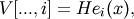

numpy.polynomial.hermite_e.hermevander¶
- numpy.polynomial.hermite_e.hermevander(x, deg)¶
Pseudo-Vandermonde matrix of given degree.
Returns the pseudo-Vandermonde matrix of degree deg and sample points x. The pseudo-Vandermonde matrix is defined by

where 0 <= i <= deg. The leading indices of V index the elements of x and the last index is the degree of the HermiteE polynomial.
If c is a 1-D array of coefficients of length n + 1 and V is the array V = hermevander(x, n), then np.dot(V, c) and hermeval(x, c) are the same up to roundoff. This equivalence is useful both for least squares fitting and for the evaluation of a large number of HermiteE series of the same degree and sample points.
Parameters : x : array_like
Array of points. The dtype is converted to float64 or complex128 depending on whether any of the elements are complex. If x is scalar it is converted to a 1-D array.
deg : int
Degree of the resulting matrix.
Returns : vander: ndarray :
The pseudo-Vandermonde matrix. The shape of the returned matrix is x.shape + (deg + 1,), where The last index is the degree of the corresponding HermiteE polynomial. The dtype will be the same as the converted x.
Examples
>>> from numpy.polynomial.hermite_e import hermevander >>> x = np.array([-1, 0, 1]) >>> hermevander(x, 3) array([[ 1., -1., 0., 2.], [ 1., 0., -1., -0.], [ 1., 1., 0., -2.]])

Previous topic
numpy.polynomial.hermite_e.hermefit
Next topic
numpy.polynomial.hermite_e.hermevander2d